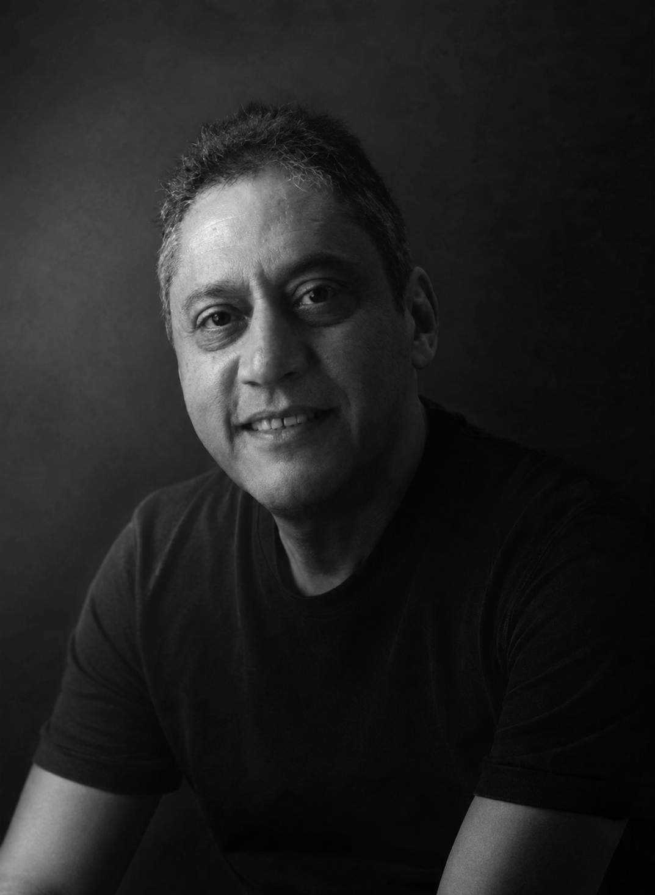
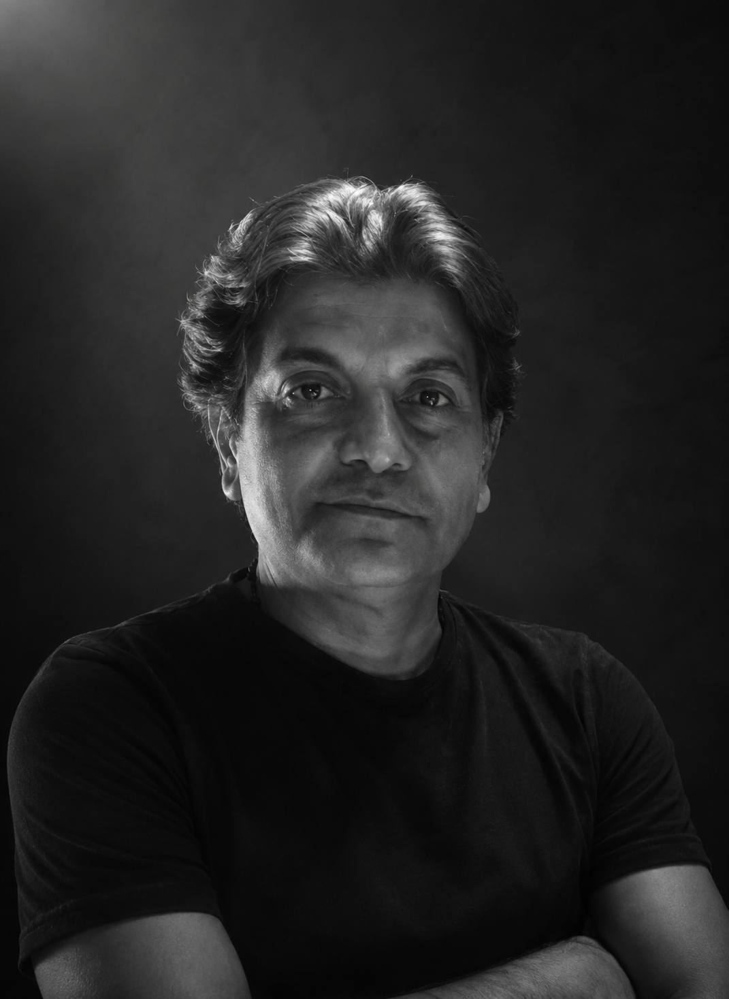
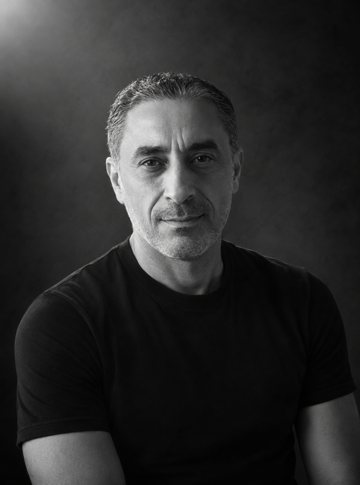

01 / Portfolio
Documentary Studio · Egypt
Egypt's story, told in light.
A collective of filmmakers with one obsession — recording the country's history and heritage before it fades.
01 — Selected Work
Films from the field
Explore Our Stories
Every documentary presented on this platform is showcased through a carefully selected preview, offering a window into the stories we tell and the heritage we preserve.
Full-length versions are available in Arabic, English, and French, ensuring that our documentaries can reach audiences across cultures and borders.
Whether you represent a television network, educational institution, cultural organization, festival, or distribution partner, we welcome inquiries regarding screenings, licensing, and collaborative opportunities.
Discover the preview. Experience the full story.
02 / Portfolio
Film 02
03 / Portfolio
Film 03
04 / Portfolio
Film 04
05 / Portfolio
Film 05
02 — The Collective
Keepers of the story

01
Presenter · Narrator · Professional Voice-Over (FR / AR)
Wael El Alfy
Presenter and narrator at Nile TV International and a professional voice-over artist in French and Arabic, serving Egypt's heritage for over three decades.
For over three decades, I have devoted my career to conveying Egyptian culture, history and heritage to French-speaking and Arabic-speaking audiences.
A French-language tour-guide lecturer since 1990 and a graduate of the Jesuit College of Cairo, I have built a career founded on mastery of the French language, excellence in narration and a passion for Egypt.
Today I am a presenter and narrator at Nile TV International, where I take part in producing programmes and documentaries devoted to Egyptian civilisation, archaeology, heritage and cultural tourism. Among the productions I have contributed to are Description of Egypt, Treasures of Egypt, The Culture Journal and Egypt at 1 pm.
Throughout my career, I have provided narration and presentation for many audiovisual productions, highlighting Egypt's most emblematic Pharaonic, Coptic and Islamic sites. My work serves television channels as much as cultural institutions, documentary producers and international organisations.
My voice, recognised for its clarity, warmth and precision, adapts to a wide range of projects: documentaries, institutional films, reports, tourism content, audio guides, museums, podcasts and communication campaigns.
Every project is, for me, an opportunity to tell a story with authenticity, emotion and professional rigour.
Skills
- Television presenting
- Documentary narration
- Professional voice-over in French and Arabic
- Cultural and tourism reporting
- Writing and adapting scripts
- Heritage and audiovisual communication
To give heritage a voice, to tell history with passion, and to build a lasting bond between cultures.

02
Director · Producer
Hani Samir
Director and producer of English-language television — talk shows, music videos, travel features and channel branding made for international audiences.
Throughout my career, I have led and delivered a diverse range of content—from live talk shows and political satire to music videos, travel features, and documentaries—many of which were broadcast in English and targeted at international audiences. My work with Nile TV's English-language programs, such as Nile Café and Generation Talk, has equipped me with the cultural fluency and editorial sensitivity needed to engage diverse viewerships.
I have also directed and produced branding campaigns and visual identities for national TV channels, collaborating with international teams and integrating cutting-edge visual design techniques including chroma and motion graphics. My hands-on skills in editing (Avid, Final Cut) and visual storytelling allow me to deliver polished productions from concept to final cut.

03
Senior Video Editor & Producer
Amr Nessim
Senior video editor and producer with 20 years crafting cinematic commercials, documentaries and AI-powered marketing films for global brands.
With 20 years of experience in video production, I specialize in crafting cinematic commercials, documentaries, corporate films, and AI-powered marketing videos that help brands communicate, engage, and grow across global markets.
04
Project Coordinator · Consultant
Nermine Atta
Project Coordinator of Egypt Heritage Films — educator, teacher trainer and French-education expert bridging learning, culture and storytelling.
I am an experienced Project Coordinator, Teacher Trainer, and French Education Expert with a strong commitment to educational excellence and professional development. Since 2018, I have been leading and coordinating educational projects, designing impactful training programs, and empowering educators to achieve excellence in teaching and learning.
As the First French Inspector, I provide pedagogical leadership, quality assurance, and continuous support for French language education. I am also a Certified Training Program Designer, accredited by the Professional Academy for Teachers in Egypt, with extensive experience in developing competency-based training programs.
In addition, I am an Accredited DELF Examiner and Marker (up to B2 level), ensuring fair and high-quality assessment in accordance with the Common European Framework of Reference for Languages (CEFR).
Beyond education, I work as a Freelance Consultant with a deep passion for documentary film marketing, cultural storytelling, and digital communication. I currently serve as the Project Coordinator of the "Egypt Heritage Films" initiative, a documentary film project dedicated to preserving, promoting, and showcasing Egypt's rich cultural heritage through compelling visual storytelling.
My expertise combines education, project management, training, international language assessment, and creative communication, allowing me to bridge the worlds of learning, culture, and innovation.
My mission is to empower people, inspire lifelong learning, and create meaningful projects that leave a lasting educational and cultural impact.
We document what is fading faster than it is being recorded.
Egypt's story is written in stone, sand and spoken word — and much of it is slipping away. Egypt Heritage Films exists to slow that loss. We record the monuments, the makers and the everyday customs that carry the country's identity forward.
Heritage shown as something still lived — not only remembered.
We work slowly and on location, with historians beside the camera, so that what reaches the screen is both cinematic and true.
Mission
To document Egypt's history and heritage with rigour, artistry and respect.
Vision
A living archive of film that keeps the country's story vivid for the next generation.
04 — Why work with us
A way of working
01
Authentic storytelling
Every narrative is grounded in real places and real voices, told with the people who live it.
02
Cinematic quality
Shot and finished to feature standard — colour, sound and frame all treated with equal care.
03
Cultural depth
Historians on the team keep the detail right, so nuance survives the edit intact.
04
Professional production
Reliable, end-to-end delivery — from the first location scout to a graded, broadcast-ready master.
05 — Contact
Let's tell a story together.
Commissioning a documentary, planning a heritage series, or exploring a partnership? We'd like to hear from you.
- Studio
- Cairo, Egypt
- Phone
- +20 100 000 0000